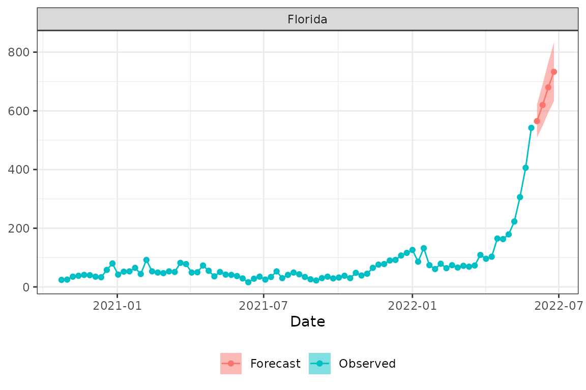
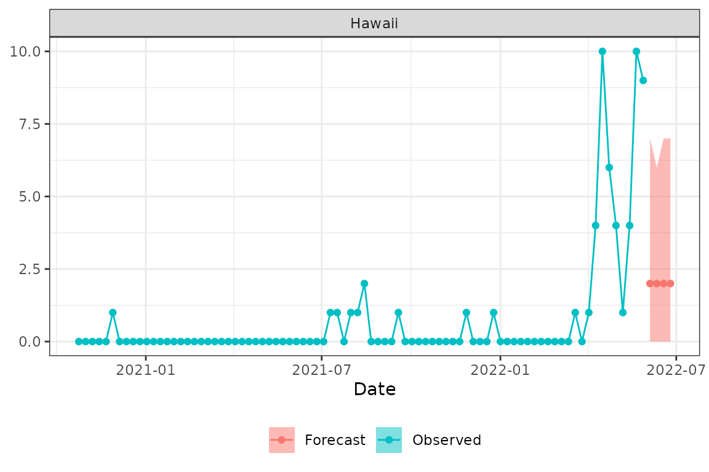

#> Error in get(paste0(generic, ".", class), envir = get_method_env()) :
#> object 'type_sum.accel' not foundOverview
The fiphde (forecasting influenza in support of public health decision making) package provides utilities for forecasting influenza hospitalizations in the United States. fiphde includes functions for retrieving hospitalization time series data from the HHS Protect system at HealthData.gov, preparing raw data for forecasting, fitting time series and count regression models to create probabilistic forecasts for influenza hospitalizations at state and national levels, visualizing and evaluating forecasts, and formatting forecasts for submission to FluSight.
fiphde rhymes with “fifty,” as in the 50 states in the US.
Usage
The fiphde package retrieves current data from HHS and CDC APIs and fits models and forecasts using this data. This vignette uses data current to May 28, 2022 (MMWR epidemiological week 21 of 2022). Running the code here as written will produce different results depending on when you run the code, as new data is constantly being added and historical data is constantly being revised.
To get started, load the packages that are used in this vignette.
Data retrieval
Prior to fitting any forecasts we need to first retrieve data from
the HealthData.gov
COVID-19 Reported Patient Impact and Hospital Capacity by State
Timeseries API. Running get_hdgov_hosp(limitcols=TRUE)
will initiate an API call with an argument to return only a selection of
fields relevant to flu hospitalization reporting.
hosp <- get_hdgov_hosp(limitcols = TRUE)
hosp
#> # A tibble: 43,967 × 14
#> state date flu.admits flu.admits.cov flu.deaths flu.deaths.cov flu.icu
#> <chr> <date> <dbl> <dbl> <dbl> <dbl> <dbl>
#> 1 AL 2019-12-31 NA 0 NA 0 NA
#> 2 HI 2019-12-31 NA 0 NA 0 NA
#> 3 IN 2019-12-31 NA 0 NA 0 NA
#> 4 LA 2019-12-31 NA 0 NA 0 NA
#> 5 MN 2019-12-31 NA 0 NA 0 NA
#> 6 MT 2019-12-31 NA 0 NA 0 NA
#> 7 NC 2019-12-31 NA 0 NA 0 NA
#> 8 PR 2019-12-31 NA 0 NA 0 NA
#> 9 TX 2019-12-31 NA 0 NA 0 NA
#> 10 AL 2020-01-01 NA 0 NA 0 NA
#> # ℹ 43,957 more rows
#> # ℹ 7 more variables: flu.icu.cov <dbl>, flu.tot <dbl>, flu.tot.cov <dbl>,
#> # cov.admits <dbl>, cov.admits.cov <dbl>, cov.deaths <dbl>,
#> # cov.deaths.cov <dbl>Time series forecasting
We will first fit a time series model, creating an ensemble model from ARIMA and exponential smoothing models. Time series modeling is based on the tidyverts (https://tidyverts.org/) collection of packages for tidy time series forecasting in R.
Data preparation
We need to initially prepare the data for a time series forecast. The
prep_hdgov_hosp function call below will limit to states
only (no territories), remove any data from an incomplete
epidemiological week (Sunday-Saturday), remove locations with little to
no reported hospitalizations over the last month, and further exclude
Washington DC from downstream analysis. The function aggregates total
number of cases at each epidemiological week at each location. This
function also adds in location FIPS codes, and joins in historical
influenza-like illness (ILI) and hospitalization mean values and ranks
by week. Historical indicators for ILI and hospitalizations are
summarized from CDC
ILINet and CDC
FluSurv-Net respectively.
# Prep data
prepped_hosp <-
hosp %>%
prep_hdgov_hosp(statesonly=TRUE, min_per_week = 0, remove_incomplete = TRUE) %>%
dplyr::filter(abbreviation != "DC")
prepped_hosp
#> # A tibble: 4,284 × 13
#> abbreviation location week_start monday week_end epiyear epiweek
#> <chr> <chr> <date> <date> <date> <dbl> <dbl>
#> 1 US US 2020-10-18 2020-10-19 2020-10-24 2020 43
#> 2 US US 2020-10-25 2020-10-26 2020-10-31 2020 44
#> 3 US US 2020-11-01 2020-11-02 2020-11-07 2020 45
#> 4 US US 2020-11-08 2020-11-09 2020-11-14 2020 46
#> 5 US US 2020-11-15 2020-11-16 2020-11-21 2020 47
#> 6 US US 2020-11-22 2020-11-23 2020-11-28 2020 48
#> 7 US US 2020-11-29 2020-11-30 2020-12-05 2020 49
#> 8 US US 2020-12-06 2020-12-07 2020-12-12 2020 50
#> 9 US US 2020-12-13 2020-12-14 2020-12-19 2020 51
#> 10 US US 2020-12-20 2020-12-21 2020-12-26 2020 52
#> # ℹ 4,274 more rows
#> # ℹ 6 more variables: flu.admits <dbl>, flu.admits.cov <dbl>, ili_mean <dbl>,
#> # ili_rank <int>, hosp_mean <dbl>, hosp_rank <int>Now let’s explore the data.
prepped_hosp %>%
filter(abbreviation %in% c("US", "CA", "TX", "NY")) %>%
ggplot(aes(week_end, flu.admits)) + geom_line() +
facet_wrap(~abbreviation, scale="free_y")What states had the highest admissions over the 2021-2022 flu season?
prepped_hosp %>%
filter(abbreviation!="US") %>%
filter(week_start>="2021-07-01" & week_end<"2022-06-30") %>%
group_by(abbreviation) %>%
summarize(total.flu.admits=sum(flu.admits)) %>%
arrange(desc(total.flu.admits)) %>%
head(10) %>%
knitr::kable(caption="Top 10 states with highest flu hospitalizations in 2021-2022.")| abbreviation | total.flu.admits |
|---|---|
| TX | 7164 |
| FL | 4550 |
| PA | 3286 |
| CA | 3233 |
| NY | 3073 |
| AZ | 2819 |
| MI | 2511 |
| OK | 2358 |
| OH | 2169 |
| MA | 2141 |
Next let’s turn this into a tsibble. tsibble objects are
tibbles with an index variable describing the inherent ordering
from past to present, and a key that defines observational
units over time. The make_tsibble function provides a
convenience wrapper around tsibble::as_tsibble using the
epidemiological week’s Monday as the weekly index and the location as
the key. Note that the specification of arguments for epidemiological
week / year and location key are passed as “bare” (unquoted) names of
columns storing this information in the original tibble.
prepped_hosp_tsibble <- make_tsibble(prepped_hosp,
epiyear=epiyear,
epiweek=epiweek,
key=location)
prepped_hosp_tsibble
#> # A tsibble: 4,284 x 14 [1W]
#> # Key: location [51]
#> abbreviation location week_start monday yweek week_end epiyear
#> <chr> <chr> <date> <date> <week> <date> <dbl>
#> 1 AL 01 2020-10-18 2020-10-19 2020 W43 2020-10-24 2020
#> 2 AL 01 2020-10-25 2020-10-26 2020 W44 2020-10-31 2020
#> 3 AL 01 2020-11-01 2020-11-02 2020 W45 2020-11-07 2020
#> 4 AL 01 2020-11-08 2020-11-09 2020 W46 2020-11-14 2020
#> 5 AL 01 2020-11-15 2020-11-16 2020 W47 2020-11-21 2020
#> 6 AL 01 2020-11-22 2020-11-23 2020 W48 2020-11-28 2020
#> 7 AL 01 2020-11-29 2020-11-30 2020 W49 2020-12-05 2020
#> 8 AL 01 2020-12-06 2020-12-07 2020 W50 2020-12-12 2020
#> 9 AL 01 2020-12-13 2020-12-14 2020 W51 2020-12-19 2020
#> 10 AL 01 2020-12-20 2020-12-21 2020 W52 2020-12-26 2020
#> # ℹ 4,274 more rows
#> # ℹ 7 more variables: epiweek <dbl>, flu.admits <dbl>, flu.admits.cov <dbl>,
#> # ili_mean <dbl>, ili_rank <int>, hosp_mean <dbl>, hosp_rank <int>Fit a model and forecast
Next, let’s fit a time series model and create forecasts using the
ts_fit_forecast function. This function takes a tsibble
created as above, a forecast horizon in weeks, the name of the outcome
variable to forecast, and optional covariates to use in the ARIMA
model.
Here we fit a non-seasonal ARIMA model with the autoregressive term
(p) restricted to 1:2, order of integration for differencing (d)
restricted to 0:2, and the moving average (q) restricted to 0 (see
?fable::ARIMA for more information). The model also fits a
non-seasonal exponential smoothing model (see ?fable::ETS
for details). In this example we do not fit an autoregressive neural
network model, but we could change nnetar=NULL to
nnetar="AR(P=1)" to do so (see ?fable::nnetar
for details). We can also trim the data used in modeling, and here we
restrict to only include hospitalization data reported after January 1,
2021. By setting ensemble=TRUE we create an ensemble model
that averages the ARIMA and exponential smoothing models.
hosp_fitfor <- ts_fit_forecast(prepped_hosp_tsibble,
horizon=4L,
outcome="flu.admits",
trim_date = "2021-01-01",
covariates=TRUE,
models=list(arima='PDQ(0, 0, 0) + pdq(1:2, 0:2, 0)',
ets='season(method="N")',
nnetar=NULL),
ensemble=TRUE)The function will output messages describing the ARIMA and ETS model
formulas passed to fable::ARIMA and
fable::ETS.
Trimming to 2021-01-01
ARIMA formula: flu.admits ~ PDQ(0, 0, 0) + pdq(1:2, 0:2, 0) + hosp_rank + ili_rank
ETS formula: flu.admits ~ season(method = "N")After fitting the models, the function then forecasts the outcome to
the specified number of weeks. Let’s take a look at the object returned
from this model fit + forecast. We see $tsfit, which gives
us the ARIMA, ETS, and ensemble model fits as list columns, one row per
location; $tsfor gives us the forecast for the next four
weeks, one row per model per location (key in the tsibble);
$formulas gives us the model formulas passed to fable
modeling functions; and if any models failed to converge we would see
those locations in $nullmodels.
hosp_fitfor
#> $tsfit
#> # A mable: 51 x 4
#> # Key: location [51]
#> location arima ets ensemble
#> <chr> <model> <model> <model>
#> 1 01 <LM w/ ARIMA(2,0,0) errors> <ETS(A,N,N)> <COMBINATION>
#> 2 02 <LM w/ ARIMA(1,0,0) errors> <ETS(A,N,N)> <COMBINATION>
#> 3 04 <LM w/ ARIMA(2,1,0) errors> <ETS(M,N,N)> <COMBINATION>
#> 4 05 <LM w/ ARIMA(2,1,0) errors> <ETS(A,N,N)> <COMBINATION>
#> 5 06 <LM w/ ARIMA(2,2,0) errors> <ETS(M,A,N)> <COMBINATION>
#> 6 08 <LM w/ ARIMA(1,1,0) errors> <ETS(A,N,N)> <COMBINATION>
#> 7 09 <LM w/ ARIMA(1,1,0) errors> <ETS(A,N,N)> <COMBINATION>
#> 8 10 <LM w/ ARIMA(2,1,0) errors> <ETS(A,N,N)> <COMBINATION>
#> 9 12 <LM w/ ARIMA(2,2,0) errors> <ETS(M,N,N)> <COMBINATION>
#> 10 13 <LM w/ ARIMA(2,1,0) errors> <ETS(A,N,N)> <COMBINATION>
#> # ℹ 41 more rows
#>
#> $tsfor
#> # A fable: 612 x 10 [1W]
#> # Key: location, .model [153]
#> location .model yweek
#> <chr> <chr> <week>
#> 1 01 arima 2022 W22
#> 2 01 arima 2022 W23
#> 3 01 arima 2022 W24
#> 4 01 arima 2022 W25
#> 5 01 ets 2022 W22
#> 6 01 ets 2022 W23
#> 7 01 ets 2022 W24
#> 8 01 ets 2022 W25
#> 9 01 ensemble 2022 W22
#> 10 01 ensemble 2022 W23
#> # ℹ 602 more rows
#> # ℹ 7 more variables: flu.admits <dist>, .mean <dbl>, epiweek <dbl>,
#> # ili_mean <dbl>, ili_rank <int>, hosp_mean <dbl>, hosp_rank <int>
#>
#> $formulas
#> $formulas$arima
#> flu.admits ~ PDQ(0, 0, 0) + pdq(1:2, 0:2, 0) + hosp_rank + ili_rank
#> <environment: 0x55a42bc233e0>
#>
#> $formulas$ets
#> flu.admits ~ season(method = "N")
#> <environment: 0x55a42bc233e0>
#>
#>
#> $nullmodels
#> # A tibble: 0 × 2
#> # ℹ 2 variables: location <chr>, model <chr>Next, we can format the forecasts for submission
to FluSight using the format_for_submission
function.
formatted_list <- format_for_submission(hosp_fitfor$tsfor, method = "ts", format = "legacy")The list contains separate submission-ready tibbles, one element for each type of model fitted.
formatted_list
#> $arima
#> # A tibble: 4,896 × 7
#> forecast_date target target_end_date location type quantile value
#> <date> <chr> <date> <chr> <chr> <chr> <chr>
#> 1 2024-12-10 1 wk ahead inc f… 2022-06-04 01 point NA 17
#> 2 2024-12-10 2 wk ahead inc f… 2022-06-11 01 point NA 21
#> 3 2024-12-10 3 wk ahead inc f… 2022-06-18 01 point NA 20
#> 4 2024-12-10 4 wk ahead inc f… 2022-06-25 01 point NA 22
#> 5 2024-12-10 1 wk ahead inc f… 2022-06-04 01 quan… 0.010 0
#> 6 2024-12-10 2 wk ahead inc f… 2022-06-11 01 quan… 0.010 4
#> 7 2024-12-10 3 wk ahead inc f… 2022-06-18 01 quan… 0.010 1
#> 8 2024-12-10 4 wk ahead inc f… 2022-06-25 01 quan… 0.010 3
#> 9 2024-12-10 1 wk ahead inc f… 2022-06-04 01 quan… 0.025 2
#> 10 2024-12-10 2 wk ahead inc f… 2022-06-11 01 quan… 0.025 6
#> # ℹ 4,886 more rows
#>
#> $ensemble
#> # A tibble: 4,896 × 7
#> forecast_date target target_end_date location type quantile value
#> <date> <chr> <date> <chr> <chr> <chr> <chr>
#> 1 2024-12-10 1 wk ahead inc f… 2022-06-04 01 point NA 18
#> 2 2024-12-10 2 wk ahead inc f… 2022-06-11 01 point NA 20
#> 3 2024-12-10 3 wk ahead inc f… 2022-06-18 01 point NA 19
#> 4 2024-12-10 4 wk ahead inc f… 2022-06-25 01 point NA 20
#> 5 2024-12-10 1 wk ahead inc f… 2022-06-04 01 quan… 0.010 0
#> 6 2024-12-10 2 wk ahead inc f… 2022-06-11 01 quan… 0.010 1
#> 7 2024-12-10 3 wk ahead inc f… 2022-06-18 01 quan… 0.010 0
#> 8 2024-12-10 4 wk ahead inc f… 2022-06-25 01 quan… 0.010 0
#> 9 2024-12-10 1 wk ahead inc f… 2022-06-04 01 quan… 0.025 3
#> 10 2024-12-10 2 wk ahead inc f… 2022-06-11 01 quan… 0.025 4
#> # ℹ 4,886 more rows
#>
#> $ets
#> # A tibble: 4,896 × 7
#> forecast_date target target_end_date location type quantile value
#> <date> <chr> <date> <chr> <chr> <chr> <chr>
#> 1 2024-12-10 1 wk ahead inc f… 2022-06-04 01 point NA 19
#> 2 2024-12-10 2 wk ahead inc f… 2022-06-11 01 point NA 19
#> 3 2024-12-10 3 wk ahead inc f… 2022-06-18 01 point NA 19
#> 4 2024-12-10 4 wk ahead inc f… 2022-06-25 01 point NA 19
#> 5 2024-12-10 1 wk ahead inc f… 2022-06-04 01 quan… 0.010 0
#> 6 2024-12-10 2 wk ahead inc f… 2022-06-11 01 quan… 0.010 0
#> 7 2024-12-10 3 wk ahead inc f… 2022-06-18 01 quan… 0.010 0
#> 8 2024-12-10 4 wk ahead inc f… 2022-06-25 01 quan… 0.010 0
#> 9 2024-12-10 1 wk ahead inc f… 2022-06-04 01 quan… 0.025 2
#> 10 2024-12-10 2 wk ahead inc f… 2022-06-11 01 quan… 0.025 1
#> # ℹ 4,886 more rowsWe can check to see if the submission is valid.
Note that this will fail if the expected date of the target dates and
current dates don’t line up. You’ll see a message noting “The
submission target end dates do not line up with expected Saturdays by
horizon. Note if submission forecast date is not Sunday or Monday, then
forecasts are assumed to to start the following week.” If
validation succeeds, the $valid element of the returned
list will be TRUE, and FALSE if any validation
checks fail.
validate_forecast(formatted_list$ensemble)Let’s plot the forecast with the observed data using the
plot_forecast function. Here we plot forecasts with the 50%
prediction interval for US, New York (FIPS 36) and Florida (FIPS
12).
plot_forecast(prepped_hosp, formatted_list$ensemble, loc="US", pi = .5)
plot_forecast(prepped_hosp, formatted_list$ensemble, loc="36", pi = .5)
plot_forecast(prepped_hosp, formatted_list$ensemble, loc="12", pi = .5)
Finally, we can pull out the ARIMA model parameters used for each location to save for posterity or retrospective analysis.
hosp_fitfor$tsfit$arima %>%
map("fit") %>%
map_df("spec") %>%
mutate(location = hosp_fitfor$tsfit$location, .before = "p")
#> location p d q P D Q constant period
#> 1 01 2 0 0 0 0 0 TRUE 52
#> 2 02 1 0 0 0 0 0 TRUE 52
#> 3 04 2 1 0 0 0 0 FALSE 52
#> 4 05 2 1 0 0 0 0 FALSE 52
#> 5 06 2 2 0 0 0 0 FALSE 52
#> 6 08 1 1 0 0 0 0 FALSE 52
#> 7 09 1 1 0 0 0 0 FALSE 52
#> 8 10 2 1 0 0 0 0 FALSE 52
#> 9 12 2 2 0 0 0 0 FALSE 52
#> 10 13 2 1 0 0 0 0 FALSE 52
#> 11 15 2 1 0 0 0 0 FALSE 52
#> 12 16 1 1 0 0 0 0 FALSE 52
#> 13 17 1 1 0 0 0 0 FALSE 52
#> 14 18 1 1 0 0 0 0 FALSE 52
#> 15 19 2 1 0 0 0 0 FALSE 52
#> 16 20 1 1 0 0 0 0 FALSE 52
#> 17 21 1 1 0 0 0 0 FALSE 52
#> 18 22 1 1 0 0 0 0 FALSE 52
#> 19 23 2 1 0 0 0 0 TRUE 52
#> 20 24 2 1 0 0 0 0 FALSE 52
#> 21 25 1 1 0 0 0 0 FALSE 52
#> 22 26 1 1 0 0 0 0 FALSE 52
#> 23 27 1 1 0 0 0 0 FALSE 52
#> 24 28 2 1 0 0 0 0 FALSE 52
#> 25 29 2 1 0 0 0 0 FALSE 52
#> 26 30 2 1 0 0 0 0 FALSE 52
#> 27 31 1 1 0 0 0 0 FALSE 52
#> 28 32 1 1 0 0 0 0 FALSE 52
#> 29 33 1 1 0 0 0 0 FALSE 52
#> 30 34 1 1 0 0 0 0 FALSE 52
#> 31 35 1 1 0 0 0 0 FALSE 52
#> 32 36 2 1 0 0 0 0 FALSE 52
#> 33 37 2 1 0 0 0 0 FALSE 52
#> 34 38 1 1 0 0 0 0 FALSE 52
#> 35 39 2 1 0 0 0 0 FALSE 52
#> 36 40 1 1 0 0 0 0 FALSE 52
#> 37 41 1 1 0 0 0 0 FALSE 52
#> 38 42 1 1 0 0 0 0 FALSE 52
#> 39 44 2 1 0 0 0 0 FALSE 52
#> 40 45 2 1 0 0 0 0 FALSE 52
#> 41 46 2 1 0 0 0 0 FALSE 52
#> 42 47 2 1 0 0 0 0 FALSE 52
#> 43 48 1 1 0 0 0 0 FALSE 52
#> 44 49 1 1 0 0 0 0 FALSE 52
#> 45 50 2 1 0 0 0 0 FALSE 52
#> 46 51 1 1 0 0 0 0 FALSE 52
#> 47 53 2 2 0 0 0 0 FALSE 52
#> 48 54 1 1 0 0 0 0 FALSE 52
#> 49 55 1 1 0 0 0 0 FALSE 52
#> 50 56 2 1 0 0 0 0 FALSE 52
#> 51 US 2 1 0 0 0 0 FALSE 52Count regression forecasting
The time series methods above assume that the outcome has a continuous distribution. When forecasting counts and especially small counts (e.g., “how many influenza hospitalizations will occur next week in Hawaii?”) alternative methods may have more desirable properties. fiphde provides functionality to leverage count regression models for forecasting influenza hospitalizations. Here we will demonstrate how to implement a count regression modeling approach. The example will step through the process of forecasting hospitalizations in Hawaii by using influenza-like illness (ILI) and indicators of historical hospitalization and ILI severity for the given epidemiological weeks. The usage illustrates an automated tuning procedure that finds the “best” models from possible covariates and model families (e.g., Poisson, Quasipoisson, Negative binomial, etc.).
ILI retrieval and prep
Given that ILI will be a covariate in the count regression model, we
must first retrieve ILI data using the get_cdc_ili()
function, which is a wrapper around ilinet(). Here, we’re
only using recent ILI data (i.e., since 2019) and we further filter the
signal to only include Hawaii. ILI is subject to revision and may be
less reliable when initially reported, so we replace the current week
and one week previous with Nowcast data. Finally, we fit
a time series model to forecast ILI for the next four weeks.
ilidat <-
get_cdc_ili(region=c("state"), years=2019:2022) %>%
filter(region == "Hawaii") %>%
replace_ili_nowcast(., weeks_to_replace=1)
ilifor <- forecast_ili(ilidat, horizon=4L, trim_date="2020-03-01")In the next step we are going to log transform weighted ILI and flu
admissions, so in this step we need to remove all the zeros. The fiphde
package provides the mnz_replace function which replaces
zeros in a variable with the smallest non-zero value of that
variable.
ilidat <- ilidat %>% mutate(weighted_ili=mnz_replace(weighted_ili))
ilifor$ilidat <- ilifor$ilidat %>% mutate(ili=mnz_replace(ili))
ilifor$ili_future <- ilifor$ili_future %>% mutate(ili=mnz_replace(ili))
ilifor$ili_bound <- ilifor$ili_bound %>% mutate(ili=mnz_replace(ili))Finally, we create our modeling dataset by combining the flu admission data prepared above with the forecasted ILI data in future weeks together with the historical severity data by epidemiological week.
dat_hi <-
prepped_hosp %>%
filter(abbreviation=="HI") %>%
dplyr::mutate(date = MMWRweek::MMWRweek2Date(epiyear, epiweek)) %>%
left_join(ilifor$ilidat, by = c("epiyear", "location", "epiweek")) %>%
mutate(ili = log(ili))
dat_hi
#> # A tibble: 84 × 15
#> abbreviation location week_start monday week_end epiyear epiweek
#> <chr> <chr> <date> <date> <date> <dbl> <dbl>
#> 1 HI 15 2020-10-18 2020-10-19 2020-10-24 2020 43
#> 2 HI 15 2020-10-25 2020-10-26 2020-10-31 2020 44
#> 3 HI 15 2020-11-01 2020-11-02 2020-11-07 2020 45
#> 4 HI 15 2020-11-08 2020-11-09 2020-11-14 2020 46
#> 5 HI 15 2020-11-15 2020-11-16 2020-11-21 2020 47
#> 6 HI 15 2020-11-22 2020-11-23 2020-11-28 2020 48
#> 7 HI 15 2020-11-29 2020-11-30 2020-12-05 2020 49
#> 8 HI 15 2020-12-06 2020-12-07 2020-12-12 2020 50
#> 9 HI 15 2020-12-13 2020-12-14 2020-12-19 2020 51
#> 10 HI 15 2020-12-20 2020-12-21 2020-12-26 2020 52
#> # ℹ 74 more rows
#> # ℹ 8 more variables: flu.admits <dbl>, flu.admits.cov <dbl>, ili_mean <dbl>,
#> # ili_rank <int>, hosp_mean <dbl>, hosp_rank <int>, date <date>, ili <dbl>Fit a model and forecast
First we create a list of different count regression models to fit. We can inspect the formulations of each model. Note that these models are specified using the trending package and internally the trendeval package is used to determine the best fitting approach.
models <-
list(
poisson = trending::glm_model(flu.admits ~ ili + hosp_rank + ili_rank, family = "poisson"),
quasipoisson = trending::glm_model(flu.admits ~ ili + hosp_rank + ili_rank, family = "quasipoisson"),
negbin = trending::glm_nb_model(flu.admits ~ ili + hosp_rank + ili_rank)
)
models$poisson
#> Untrained trending model:
#> glm(formula = flu.admits ~ ili + hosp_rank + ili_rank, family = "poisson")
models$quasipoisson
#> Untrained trending model:
#> glm(formula = flu.admits ~ ili + hosp_rank + ili_rank, family = "quasipoisson")
models$negbin
#> Untrained trending model:
#> glm.nb(formula = flu.admits ~ ili + hosp_rank + ili_rank)We must next project covariates four weeks into the future, which we can accomplish by pulling from the forecasted ILI and historical severity data.
new_cov <-
ilifor$ili_future %>%
left_join(fiphde:::historical_severity, by="epiweek") %>%
select(-epiweek,-epiyear) %>%
mutate(ili = log(ili))
new_cov
#> # A tibble: 4 × 6
#> location ili ili_mean ili_rank hosp_mean hosp_rank
#> <chr> <dbl> <dbl> <int> <dbl> <int>
#> 1 15 0.655 1.02 12 0 0
#> 2 15 0.634 0.985 10 0 0
#> 3 15 0.642 0.946 9 0 0
#> 4 15 0.644 0.920 8 0 0Next we use fiphde’s glm_wrap function which attempts to
find the best-fitting model out of all the models supplied, and
specifies the prediction interval quantiles used in FluSight.
res <- glm_wrap(dat_hi,
new_covariates = new_cov,
.models = models,
alpha = c(0.01, 0.025, seq(0.05, 0.5, by = 0.05)) * 2)
res$forecasts$location <- "15"We can take a quick look at the forecast output as well as different aspects of the final fitted model.
head(res$forecasts)
#> # A tibble: 6 × 5
#> epiweek epiyear quantile value location
#> <dbl> <dbl> <dbl> <dbl> <chr>
#> 1 22 2022 0.01 0 15
#> 2 22 2022 0.025 0 15
#> 3 22 2022 0.05 0 15
#> 4 22 2022 0.1 0 15
#> 5 22 2022 0.15 1 15
#> 6 22 2022 0.2 1 15
res$model
#> <trending_fit_tbl> 1 x 3
#> result warnings errors
#> <list> <list> <list>
#> 1 <glm> <NULL> <NULL>
res$model$fit
#> NULL
res$model$fit$fitted_model$family
#> NULL
res$model$fit$fitted_model$coefficients
#> NULLNext we prepare the data in the quantile format used by FluSight.
hi_glm_prepped <- format_for_submission(res$forecasts, method="CREG", format = "legacy")
hi_glm_prepped
#> $CREG
#> # A tibble: 96 × 7
#> forecast_date target target_end_date location type quantile value
#> <date> <chr> <date> <chr> <chr> <chr> <chr>
#> 1 2024-12-27 1 wk ahead inc f… 2022-06-04 15 quan… 0.010 0
#> 2 2024-12-27 1 wk ahead inc f… 2022-06-04 15 quan… 0.025 0
#> 3 2024-12-27 1 wk ahead inc f… 2022-06-04 15 quan… 0.050 0
#> 4 2024-12-27 1 wk ahead inc f… 2022-06-04 15 quan… 0.100 0
#> 5 2024-12-27 1 wk ahead inc f… 2022-06-04 15 quan… 0.150 1
#> 6 2024-12-27 1 wk ahead inc f… 2022-06-04 15 quan… 0.200 1
#> 7 2024-12-27 1 wk ahead inc f… 2022-06-04 15 quan… 0.250 1
#> 8 2024-12-27 1 wk ahead inc f… 2022-06-04 15 quan… 0.300 1
#> 9 2024-12-27 1 wk ahead inc f… 2022-06-04 15 quan… 0.350 2
#> 10 2024-12-27 1 wk ahead inc f… 2022-06-04 15 quan… 0.400 2
#> # ℹ 86 more rowsFinally, we can visualize the forecasted point estimates with the 90% prediction interval alongside the observed data.
plot_forecast(dat_hi, hi_glm_prepped$CREG, location="15", pi=.9)